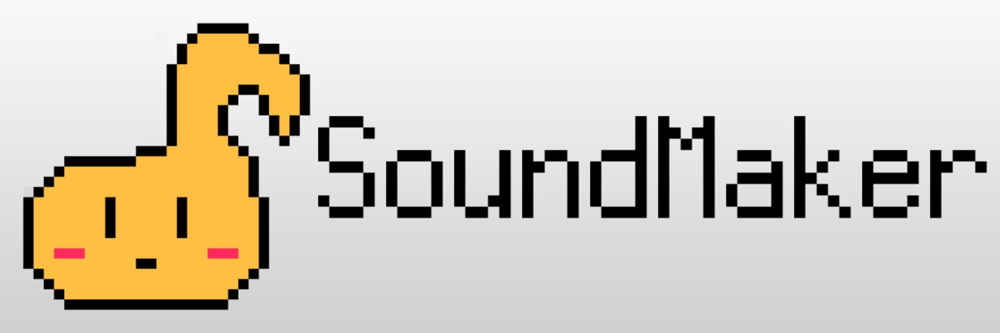

SoundMakerとは
SoundMakerは、.NET上で動作する音を生成するライブラリです。
特徴
「音程がC4の四分音符」というように音楽の知識で音を生成できます
// 音符
new Note(Scale.C, 5, LengthType.Eighth, isDotted: true);
// 休符
new Rest(LengthType.Quarter);
// タイ
new Tie(new Note(Scale.D, 5, LengthType.Eighth), LengthType.Eighth);
// 連符
new Tuplet([new Note(Scale.D, 5, LengthType.Eighth), new Note(Scale.D, 5, LengthType.Eighth)], LengthType.Quarter);
周波数を指定しても音を生成できます
var triangleWave = new TriangleWave();
int hertz = 800;
int length = (int)format.SamplingFrequency * 5;
int volume = 50;
short[] waveShorts = triangleWave.GenerateWave(format, length, volume, hertz);
リニアPCMのWAVを出力することができます
var builder = FormatBuilder.Create()
.WithFrequency(48000)
.WithBitDepth(16)
.WithChannelCount(2);
var sound = new SoundWaveChunk(/* 音声波形バイト列 */);
var waveFileFormat = builder.ToFormatChunk();
var writer = new WaveWriter(waveFileFormat, sound);
string filePath = "sample.wav";
writer.Write(filePath);
ストリームへ書き込むことも可能です。
writer.Write(stream);
楽譜記述フォーマットを提供
簡単な楽譜記述フォーマットのシリアライズ・デシリアライズ機能を提供しています。
// コメントアウト
// 付点四分音符(音階はC#4)
C#4, 4.
// 休符
rest, 4.
// タイ と 三連符(4分音符を三等分している)
tie(C4, 4, 4, 4); tup(4, C4, C4, C4)